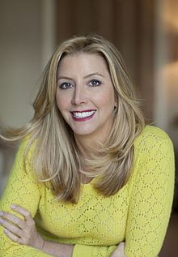

Blakely was born February 27, 1971, in Clearwater, Florida. She is the daughter of a trial attorney and an artist.She attendedClearwater High School and graduated from Florida State University with a communication degree,where she was a member of the Delta Delta Delta sorority.
Although she initially planned to become an attorney, she reconsidered after failing the Law School Admission Test; she instead accepted a job at Walt Disney World in Orlando, Florida, where she worked for three months.[6] She also occasionally worked as astand-up comedian during this period.
After her short stint at Disney, Blakely accepted a job with office supply company Danka, where she sold fax machines door-to-door.She was quite successful in sales and was promoted to national sales trainer at the age of 25.Forced to wear pantyhose in the hot Floridian climate for her sales role, Blakely disliked the appearance of the seamed foot while wearing open-toed shoes, but liked the way that the control-top model eliminated panty lines and made her body appear firmer. For her attendance at a private party, she experimented by cutting off the feet of her pantyhose while wearing them under a new pair of slacks and found that the pantyhose continuously rolled up her legs, but she also achieved the desired result(the original pants are now enshrined at Spanx headquarters).
At age 27, Blakely relocated to Atlanta, Georgia, and while still working at Danka, spent the next two years and $5,000 savings researching and developing her hosiery idea.Upon inquiring, she found that there were no female patent lawyers operating in the entire state of Georgia. Unwilling to spend the $3,000-$5,000 quoted in legal fees, she instead wrote her own patent after purchasing a textbook from Barnes & Noble.
Blakely then drove to North Carolina, the location of most of America's hosiery mills, to present her idea. She was turned away by every representative; these companies were used to dealing with established companies, and did not see the value of her idea. Two weeks after arriving home from her North Carolina trip, Blakely received a call from a male mill operator based in Asheboro, North Carolina, who offered to support Blakely's concept, as he had received strong encouragement from his three daughters. Blakely further explained in 2011 that the experience of developing her idea also revealed to her that the hosiery manufacturing industry was overseen solely by men who were not using the products they were producing.
The creation of the initial product prototype was completed over the course of a year and involved Blakey, her mother and her friends personally testing the garments; this was considered innovative at the time, as the industry did not test products with people. Blakely's research revealed that the industry had previously been using the same-size waistband for all hosiery products to cut costs, and a rubber cord was also inserted into the waistband. For her product development, Blakely created different waistbands to suit different-sized consumers.
Blakely then returned to a patent attorney to finalize her application prior to her submission to the United States Patent and Trademark Office (USPTO) and he agreed to assist Blakely for a sum of US$750. Following the submission of the online application, Blakely then worked on the packaging of her product, which she intended to be bold and colored red, as the other brands at the time were all packaged in "beige, white or grey," and displayed the same type of female model. In addition to coloring her packaging red, Blakely used three animated images of different-looking women, which was also novel at the time. In terms of the other information that is displayed on hosiery packaging, Blakely bought 10 different product brands from a department store to use as a guide.
Requiring a brand name for her product, Blakely was frustrated after not being able to settle on a title she was satisfied with after about a year-and-a-half of ideation. At the time of finalizing a brand name, Blakely knew that Coca-Cola and Kodak were the two most recognized brand names in the world, with both containing a strong "k" sound. Blakely read that the founder of Kodak liked the sound so much that he used it as the beginning and end of his brand name and then proceeded to create a functioning word based upon this foundation. Blakely had also been informed by comedian friends that the "k" sound is a trade secret to ensure laughter from an audience. Then, while sitting in traffic, the name "Spanks" came to Blakely and she decided shortly afterwards that she would replace the "ks" with an "x", as her research had shown that constructed names were more successful and were also easier to register as a trademark. Blakely then used her credit card to purchase the "Spanx" trademark on the USPTO website for US$150.
Blakely managed to arrange a meeting with a representative of the Neiman Marcus Group, at which she changed into the product in the ladies restroom in the presence of the Neiman Marcus buyer to prove the benefits of her innovation.Blakely's product was sold in seven Neiman Marcus stores as a result of the meeting; Bloomingdales, Saks, and Bergdorf Goodman soon followed. At around this time, Blakely sent a basket of products to Oprah Winfrey's television program, with a gift card that explained what she was attempting to develop.
Blakely initially handled all aspects of the business, including marketing, logistics and product positioning, preferring the location of Spanx alongside shoes in retail outlets, rather than in hosiery sections; however, her boyfriend at the time, a healthcare consultant, later resigned from his job and joined Blakely in the running of the nascent business.Blakely was contacting friends and acquaintances, including those from her past, and asking them to seek out her products at select department stores in exchange for a check that she would send to them by mail as a token of appreciation.
In November 2000, Winfrey named Spanx a "Favorite Product", leading to a significant rise in popularity and sales, as well as Blakely's resignation from Danka. Spanx achieved US$4 million in sales in its first year and US$10 million in sales in its second year. In 2001, Blakely signed a contract with QVC, the home shopping channel, and sold 8,000 pairs in the first six minutes of operation.
In October 2013, Blakely explained that her ambition is to design the world's most comfortable high-heel shoe prior to retirement. As of 2014, she is listed as the 93rd most powerful woman in the world by Forbes.
In 2005, Blakely attained second place as a contestant on The Rebel Billionaire,a reality television series that introduced her to Richard Branson, who later supported Blakely in her endeavors as both an entrepreneur and philanthropist. She later starred as one of the judges on ABC's reality television series, American Inventor, alongside George Foreman, Pat Croce and Peter Jones.